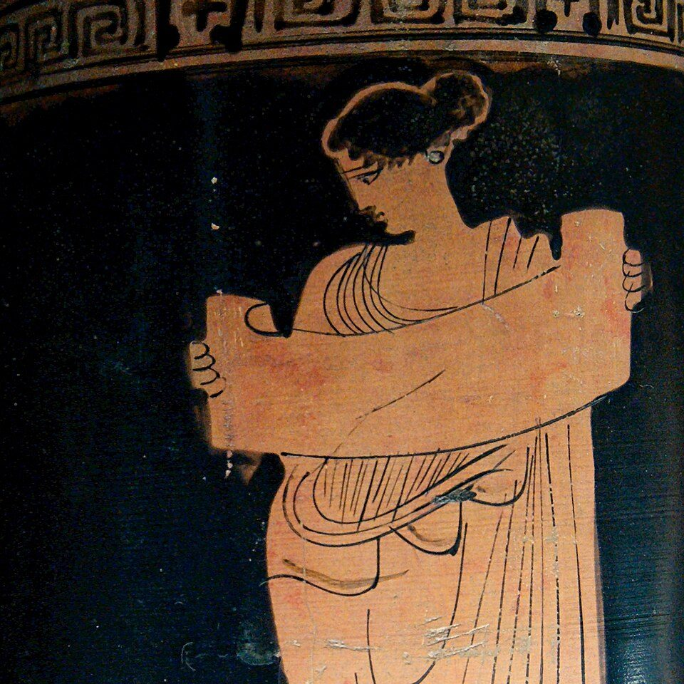

Qué es
La reserva cognitiva es la capacidad del cerebro para tolerar daños (por envejecimiento, alzhéimer o lesiones vasculares) sin que aparezcan síntomas, o con síntomas más leves. Se observó al ver que algunas personas sin demencia en vida tenían en la autopsia lesiones de alzhéimer avanzadas.
Se habla de:
- Reserva cerebral: más neuronas y sinapsis de partida.
- Reserva cognitiva: usar las redes cerebrales de forma más eficiente o flexible, y compensar con otras cuando unas fallan.

Qué la construye
- Educación: más años de escolarización se asocian a menor riesgo de demencia.
- Trabajos mentalmente exigentes y complejos.
- Actividades de ocio intelectuales: leer, escribir, juegos de estrategia, aprender cosas nuevas.
- Bilingüismo: algunos estudios sugieren que retrasa la aparición de los síntomas, aunque los resultados no son unánimes.
- Música: tocar un instrumento implica muchas redes cerebrales a la vez.
- Vida social activa.
- Ejercicio físico.
Lo que hay que saber
- Lo más útil son actividades variadas, nuevas y que supongan un reto, mejor si combinan lo mental, lo físico y lo social (bailar, voluntariado, aprender un idioma en grupo).
- Los «juegos para entrenar el cerebro» mejoran sobre todo la tarea entrenada; su efecto sobre la vida diaria o la prevención de la demencia es limitado.
- La reserva no impide la enfermedad: retrasa los síntomas. Por eso, cuando aparecen, a veces la evolución es más rápida.
Fuentes
- Stern Y, et al. Whitepaper: defining and investigating cognitive reserve, brain reserve, and brain maintenance. Alzheimers Dement. 2020;16:1305-11. doi:10.1016/j.jalz.2018.07.219.
- Livingston G, et al. Dementia prevention, intervention, and care: 2024 report of the Lancet standing Commission. Lancet. 2024;404:572-628. doi:10.1016/S0140-6736(24)01296-0.